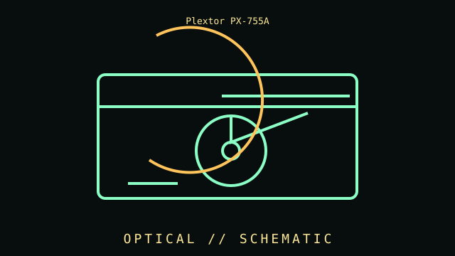

[ DVD WRITERS // IDENTIFIED COMPONENT ]
Plextor PX-755A
Internal DVD±RW drive, 2005 generation. This entry records a distinct product or well-defined family; differences among revisions and similarly named models are called out below.

MODEL IDENTIFICATION: Match the full model/part number, revision, and region to the item label and its manufacturer documentation. Where a family has multiple revisions, specifications below are not universal across the family.
Recorded specifications
| Cataloged part | Plextor PX-755A |
|---|---|
| Era / family | Internal DVD±RW drive, 2005 generation |
| Key specifications | 5.25-inch half-height; ATAPI/IDE; 16x DVD writer class; CD/DVD read/write capability depends on media and firmware. |
| Interface / fit | Requires PATA controller, jumper/cable settings, legacy OS driver and suitable recording software. |
| Variants / identification | PX-755SA is a SATA interface variant; “A” and “SA” are not same connector. |
| Archive record | Record full part number, hardware revision, serial/date code, firmware/BIOS, accessories, physical condition, and the documentation revision used for verification. |
Compatibility and handling
- Confirm the complete part number, connector signal/pinout, supported host, dimensions, power, firmware and operating-system requirements before use.
- Inspect for corrosion, cracked parts, bent pins, damaged insulation, failing bearings, leaking cells, or prior repair. Avoid powering unidentified or damaged hardware.
- For compatibility claims, cite a specific manual, CPU support list, interface standard, or tested host configuration; physical fit alone is insufficient.
- Record measurements with the test setup and instrument conditions; distinguish vendor maximums from measured or sustained results.
Model notes
Requires PATA controller, jumper/cable settings, legacy OS driver and suitable recording software.
PX-755SA is a SATA interface variant; “A” and “SA” are not same connector.
Sources & further reading
- Manufacturer / standards documentation — Plextor PX-755AReference supplied for this specific model or standards family; verify full revision against the nameplate/manual.
- Manufacturer / standards documentation — Plextor PX-755AReference supplied for this specific model or standards family; verify full revision against the nameplate/manual.
Source links may describe a product family, not the exact board revision or region. The full model-specific manual/specification takes precedence.